45 mã sản phẩm
Danh sách canonical dẫn về trang chi tiết từng part number.
Cáp và đầu nối (cables & connectors) Norgren kết nối cảm biến, cơ cấu chấp hành và IO-Link master trong tủ điều khiển và trên máy. Khi chọn, bạn cần xác định kiểu đầu nối (M8/M12), số chân, kiểu mã hóa (A/B/D-coded), chiều dài cáp, cấp bảo vệ IP và kiểu thẳng hay góc, nên đối chiếu part number với datasheet trước khi báo giá để đảm bảo khớp sơ đồ chân và môi trường lắp đặt. Nếu bạn đang thay cáp hỏng trên dây chuyền, hãy gửi mã cũ hoặc ảnh đầu nối để chúng tôi tra cứu mã và xác nhận số chân, chiều dài tương thích. Trang giúp đội mua hàng và kỹ thuật bảo trì, tự động hóa tại Việt Nam tra cứu nhanh theo mã, so sánh biến thể và tìm phụ kiện liên quan như đầu bịt, gá lắp và bộ chia. Gửi part number, BOM hoặc ảnh đầu nối để được tư vấn đúng sơ đồ chân, chiều dài và báo giá chính xác.

Khi đặt cáp – đầu nối, hãy gửi kiểu đầu nối (M8/M12), số chân, kiểu mã hóa và chiều dài cần. Nếu thay cáp cũ, ảnh đầu nối và đo chiều dài giúp đối chiếu part number nhanh. Lưu ý môi trường (dầu, kéo gập, nhiệt độ) ảnh hưởng đến loại vỏ cáp, nên cho biết điều kiện lắp đặt để chọn đúng. Chúng tôi xác minh datasheet về số chân và mã hóa trước khi báo giá để tránh nhầm sơ đồ chân giữa các chuẩn.
Danh sách canonical dẫn về trang chi tiết từng part number.
Datasheet, brochure, installation guide hoặc tài liệu liên quan.
Mã liên quan giúp đặt đồng bộ và tránh thiếu vật tư khi lắp.
Hiển thị 45 mã thuộc category này.
Industrial ethernet cable, 5 m, 4 pin, open end, M12 x 1, 250 V AC/DC

Valve connector, 0.6 m, 3 pin, DIN EN 175301‑803 Form B, 24 V AC/DC, with indicator

Valve connector, 2 m, 3 pin, DIN EN 175301‑803 Form A, 24 V AC/DC, with indicator

Industrial ethernet cable, 0.5 m, 4 pin, M12 x 1, 50 V AC / 60 V DC

Valve connector, 2 m, 3 pin, DIN EN 175301‑803 Form C, 24 V AC/DC, with indicator

Valve connector, 2 m, 3 pin, DIN EN 175301‑803 Form B, 24 V AC/DC, with indicator

Valve connector, 5 m, 3 pin, DIN EN 175301‑803 Form B, 24 V AC/DC, with indicator

Valve connector, 0.6 m, 3 pin, DIN EN 175301‑803 Form A, 24 V AC/DC, with indicator

Valve connector, 5 m, 3 pin, DIN EN 175301‑803 Form C, 24 V AC/DC, with indicator

Valve connector, 5 m, 3 pin, DIN EN 175301‑803 Form B, 24 V AC/DC, with indicator
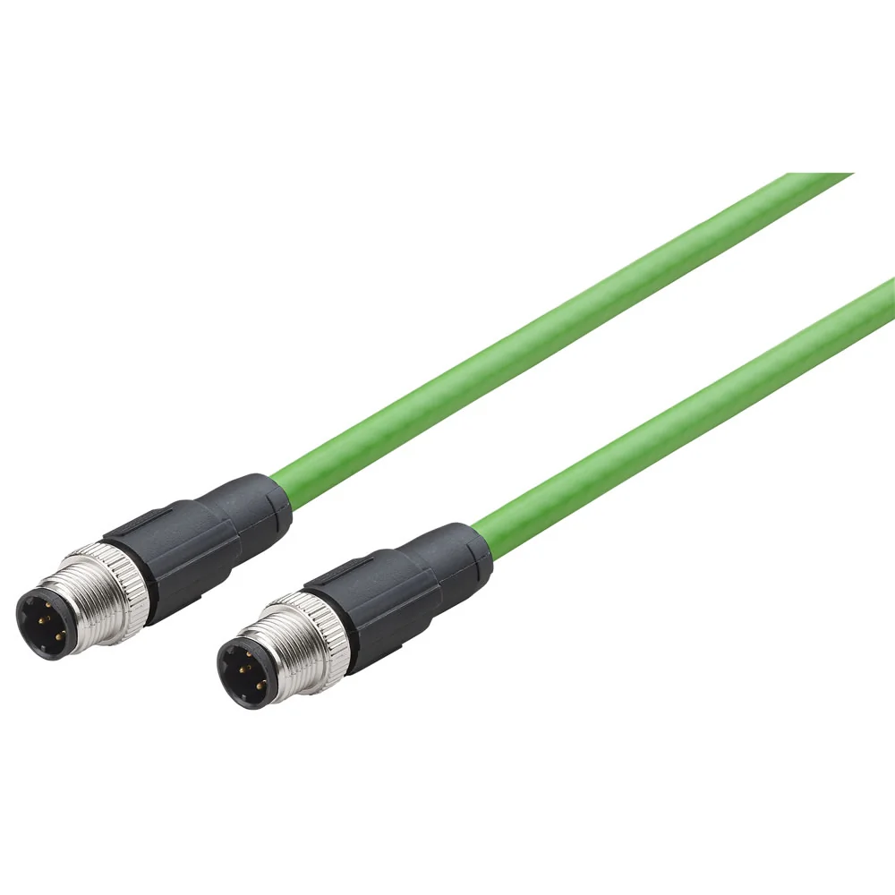
Industrial ethernet cable, 5 m, 4 pin, M12 x 1, 50 V AC / 60 V DC

Valve connector, 1 m, 3 pin, DIN EN 175301‑803 Form A, 24 V AC/DC, with indicator

Industrial ethernet cable, 2 m, 4 pin, open end, M12 x 1, 250 V AC/DC

Industrial ethernet cable, 2 m, 4 pin, M12 x 1, 50 V AC / 60 V DC

Valve connector, 5 m, 3 pin, DIN EN 175301‑803 Form A, 24 V AC/DC, with indicator
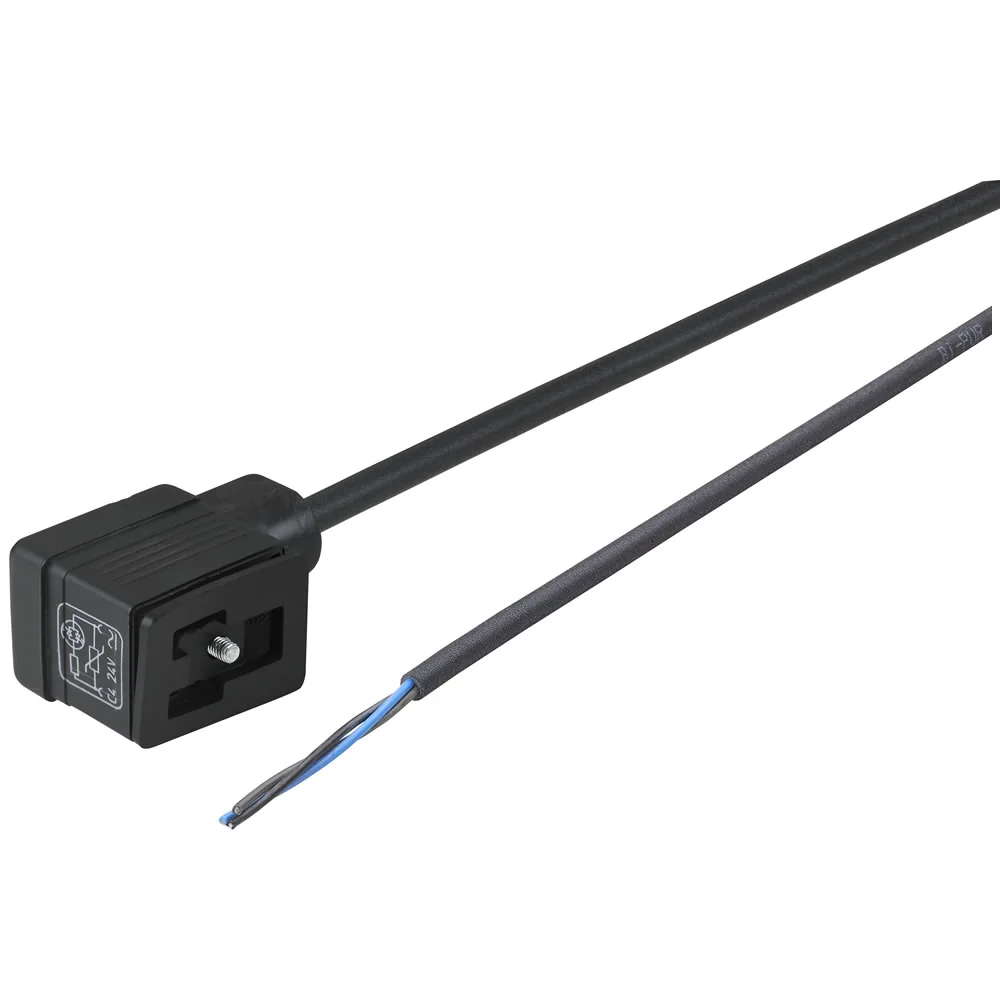
Valve connector, 1 m, 3 pin, DIN EN 175301‑803 Form B, 24 V AC/DC, with indicator

Valve connector, 3 m, 3 pin, DIN EN 175301‑803 Form B, 24 V AC/DC, with indicator

Valve connector, 1 m, 3 pin, DIN EN 175301‑803 Form B, 24 V AC/DC, with indicator

Valve connector, 2 m, 3 pin, DIN EN 175301‑803 Form B, 24 V AC/DC, with indicator
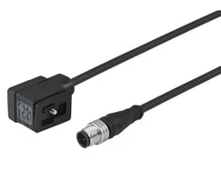
Valve connector, 0.6 m, 3 pin, DIN EN 175301‑803 Form B, 24 V AC/DC, with indicator

Valve connector, 1 m, 3 pin, DIN EN 175301‑803 Form C, 24 V AC/DC, with indicator
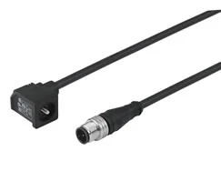
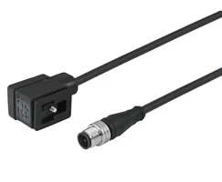
Valve connector, 1 m, 3 pin, DIN EN 175301‑803 Form B, 24 V AC/DC, with indicator
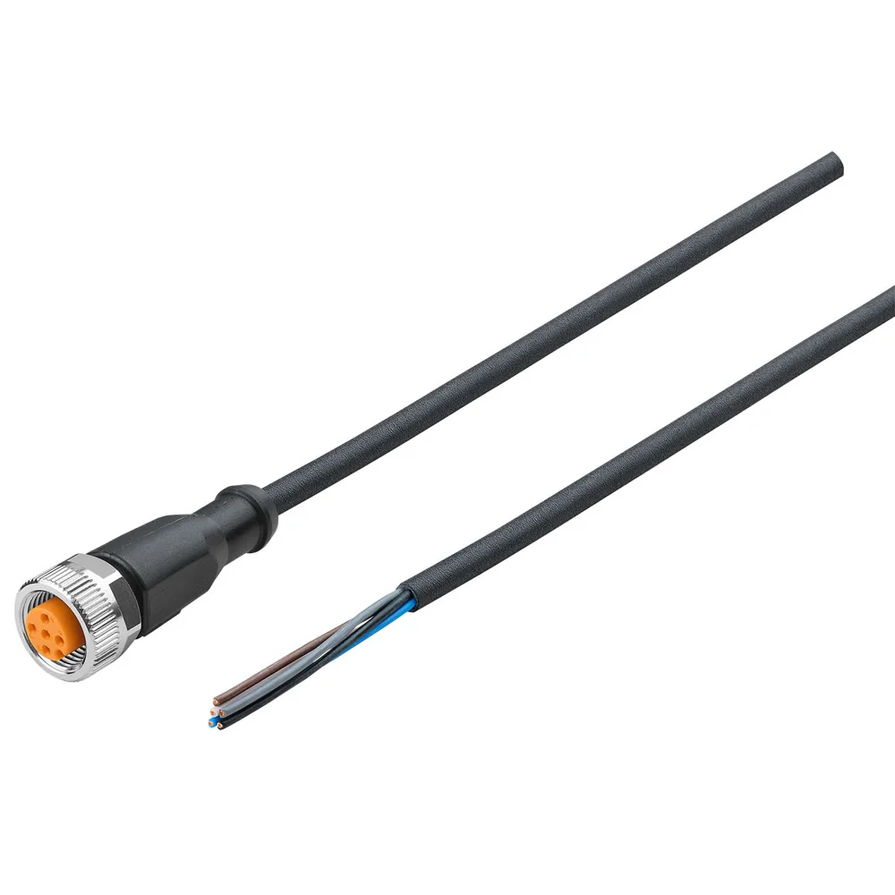
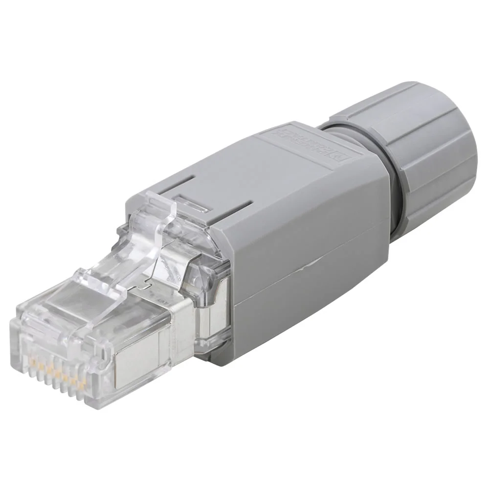

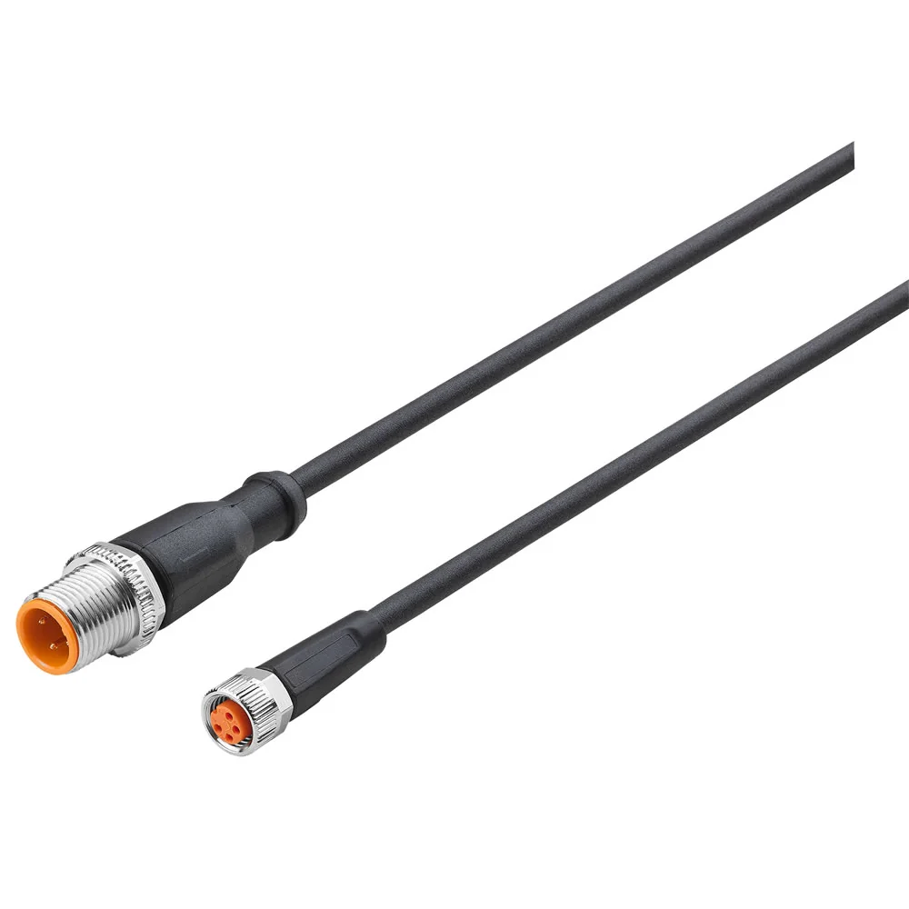
Connector cable, 0.6 m, 4 pin, M8 x 1, M12 x 1, 50 V AC / 60 V DC


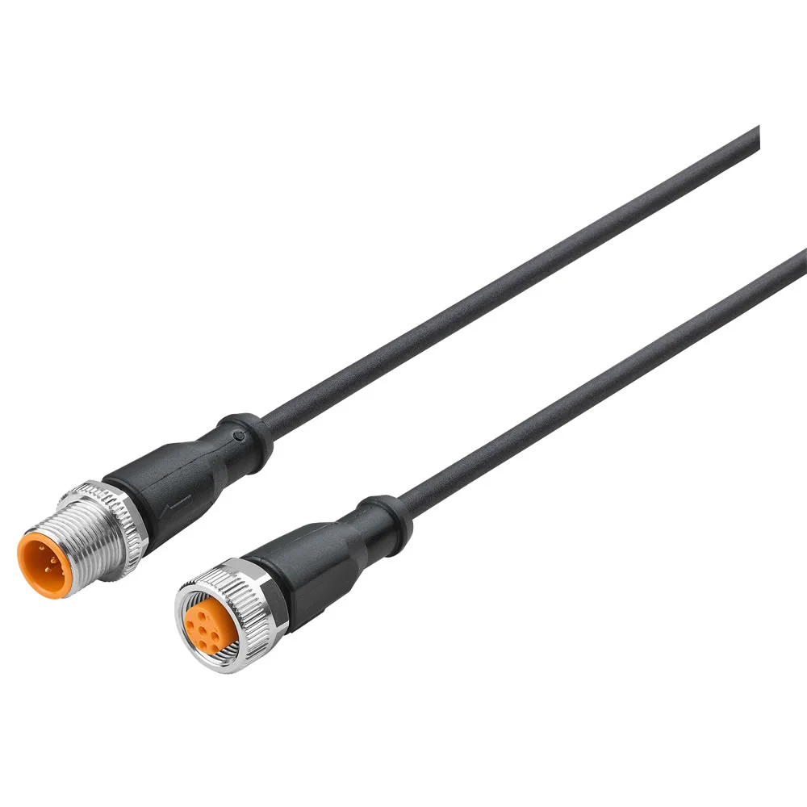

Connector cable, 3 pin, M8 x 1 plug, 5 m cable, 50 V AC / 60 V DC


Connector cable, 5 m, 4 pin, M8 x 1, M12 x 1, 50 V AC / 60 V DC

Connector cable, 3 pin, M8 x 1 plug, 5 m cable, 50 V AC / 60 V DC

Connector cable, 2 m, 4 pin, M8 x 1, M12 x 1, 50 V AC / 60 V DC
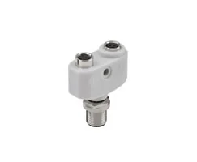

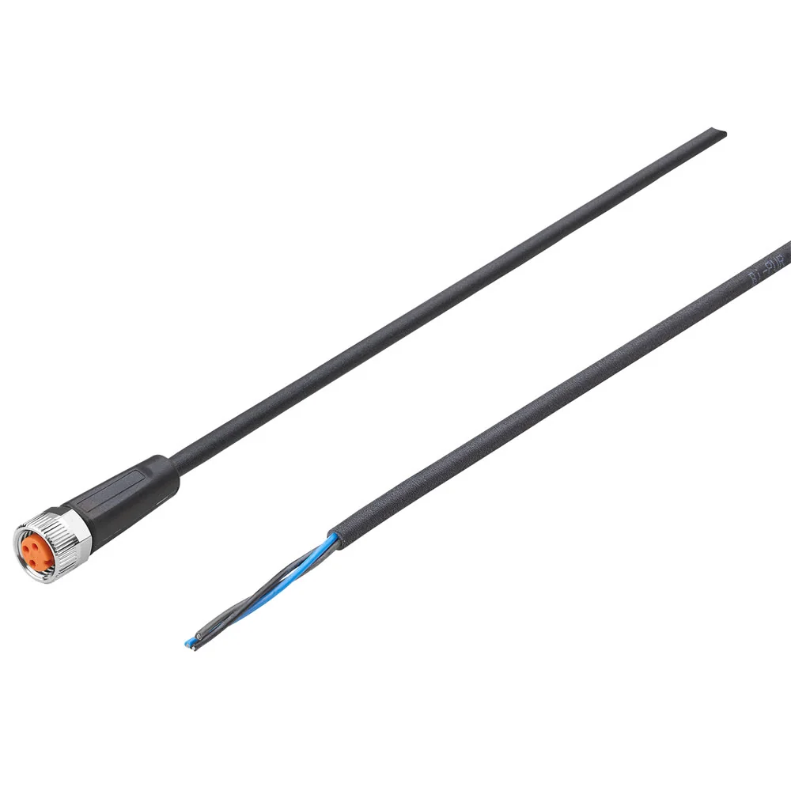
Connector cable, 3 pin, M8 x 1 plug, 3 m cable, 50 V AC / 60 V DC
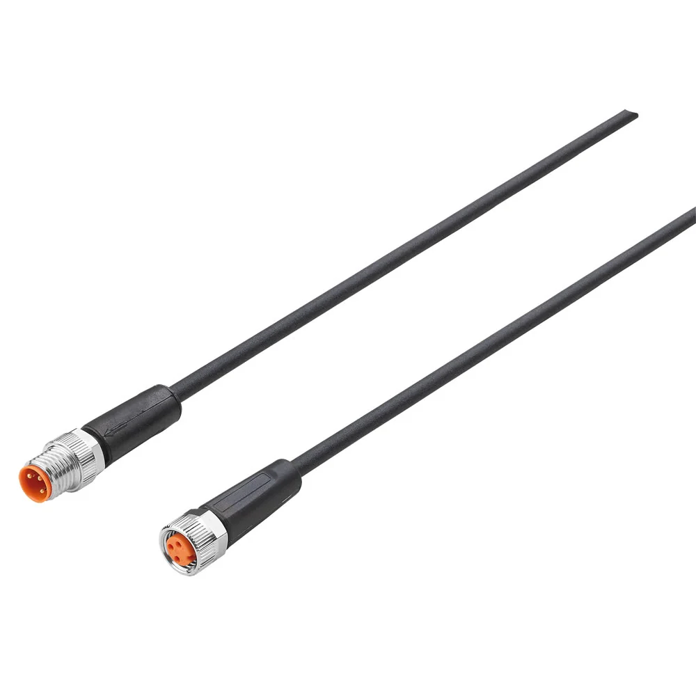
Connector cable, 3 pin, M8 x 1 plug, 5 m cable, 50 V AC / 60 V DC

Connector cable, 3 pin, M8 x 1 plug, 5 m cable, 50 V AC / 60 V DC
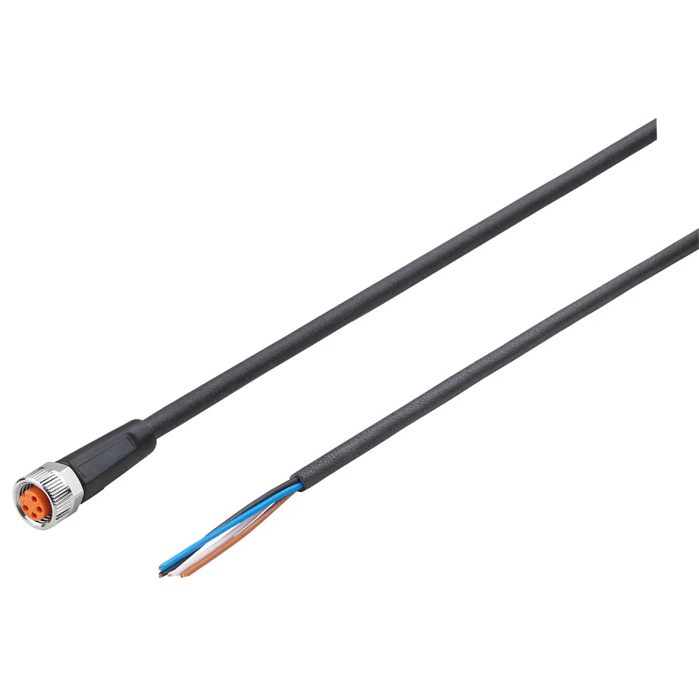

Connector cable, 1 m, 4 pin, M8 x 1, M12 x 1, 50 V AC / 60 V DC

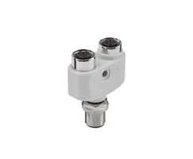
Kiểu mã hóa nhìn theo rãnh khóa và ghi trong datasheet. Bạn gửi ảnh đầu nối hoặc part number cũ để chúng tôi xác nhận trước khi báo giá.
Có. Gửi điều kiện lắp đặt; chúng tôi chọn mã có vỏ cáp phù hợp (chịu dầu, chuẩn xích cáp) theo thông số kỹ thuật.
Tùy dòng. Một số mã có sẵn các chiều dài tiêu chuẩn; bạn gửi chiều dài cần để chúng tôi đối chiếu mã phù hợp.
Đầu góc tiết kiệm không gian lắp. Gửi vị trí lắp để chúng tôi tư vấn kiểu phù hợp và phụ kiện liên quan.